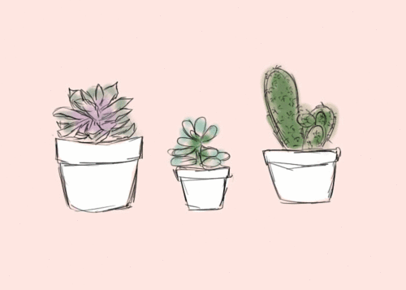
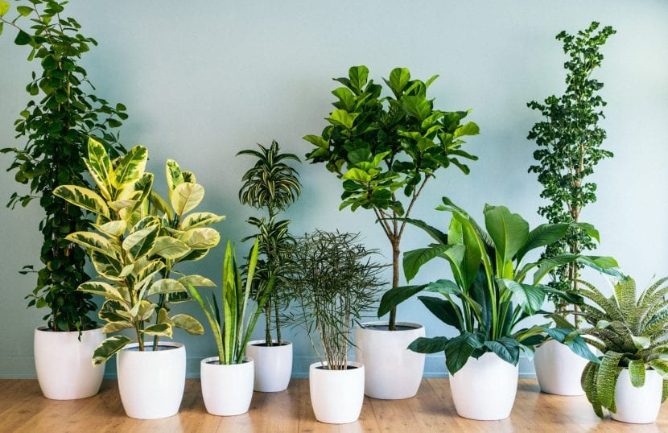
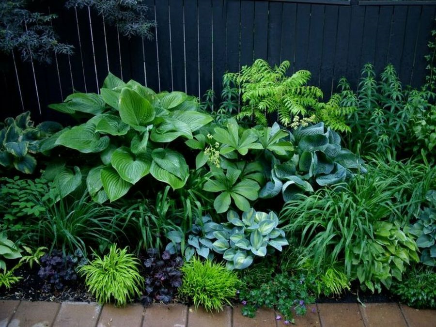

Las Plantas son Nuestras Amigas
IMAGENES de Nuestras PLANTAS
De: nuestras flores, de interior y exterior.


Nuestros AUDIOS
Algunos Consejos Para El Cuidado De Nuestras Plantas.
Cinco consejos prácticos para el cuidado de las plantas
Cuidados generales de las plantas
Seis plantas resistentes y faciles de cuidar